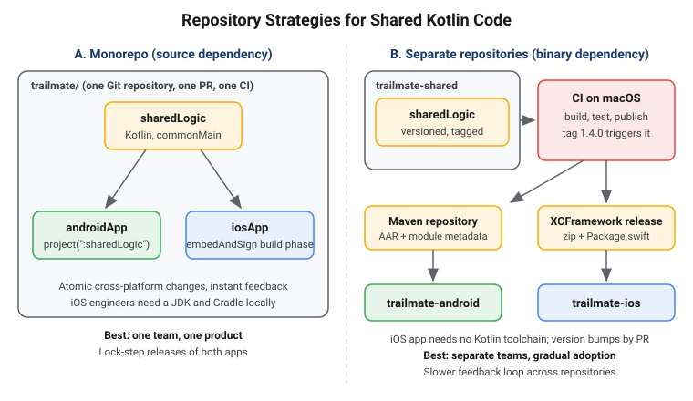

Adopting KMP in Existing Android and iOS Apps
|
This content was generated with the assistance of AI and should be verified against the official documentation before being relied on in production. |
Most teams do not start from an empty folder. They have an Android app in production, an iOS app that a different group of people maintains, and a backlog that does not stop for a rewrite. Kotlin Multiplatform (KMP) is designed for exactly this situation: it is incremental, so you can move one repository, one use case or one screen at a time while both apps keep shipping. This page is the practical guide to that journey, from the first Gradle module to the organisational questions that decide whether the adoption lasts.
The examples target the section baseline: Kotlin 2.4.20, Compose Multiplatform 1.12.1, AGP 9.4 with the
com.android.kotlin.multiplatform.library plugin, Xcode 26.4, Ktor 3.6.0, SQLDelight 2.4.0, Koin 4.2.2
and Room 3 (androidx.room3) 3.0.3. Stability is stated where it is not Stable: Swift export and SwiftPM import are
Alpha, and Kotlin/Wasm and Compose Multiplatform for the web are Beta; everything this page relies on for
Android and iOS is Stable. The worked example is TrailMate, the hiking-trail app of the Android section, which grows
into TrailMate Everywhere (package com.example.trailmate), introduced in
What Kotlin Multiplatform Is and When to Use It. The
Kotlin language is not re-taught here; see Kotlin for it.
Pick an Adoption Path First
"Adopting KMP" covers several very different starting points. Decide which one you are in before touching Gradle, because the order of work, the team impact and the risk differ.
| Starting point | What you do | Why it fits | Main risk |
|---|---|---|---|
Android app only, iOS app is planned |
Migrate the Android app to KMP, add iOS targets, build a new iOS app (native UI or Compose Multiplatform) on top |
One team, one codebase, the shared code is already written and tested |
Android-only libraries are scattered through the code |
Android and iOS apps both exist, written separately |
Extract one self-contained feature (for example the trail repository) into a shared module and call it from both apps |
Lowest risk; each app keeps its architecture and its UI |
Two teams must agree on one API and one release rhythm |
Migrating an Android App, Step by Step
The safest order is the one that keeps the app releasable after every step. It follows the dependency direction: first make the code able to be shared (swap libraries), then move it, and only then think about the UI.
| Step | Goal | Releasable after the step? |
|---|---|---|
0 |
Move the Android application into its own |
Yes, behaviour is identical |
1 |
Create |
Yes, the module is empty |
2 |
Replace Android-only libraries with multiplatform ones, one at a time |
Yes |
3 |
Move domain, data and ViewModels into |
Yes |
4 |
Add iOS: build the framework, wire it into Xcode |
Yes |
5 |
Optionally move screens into |
Yes, screen by screen |
Step 0: Separate the Application Module
Under AGP 9, the com.android.application and com.android.library plugins can no longer be applied in the same module
as the Kotlin Multiplatform plugin, so the Android app has to live in its own module regardless. Doing it first, as a
pure refactoring, removes the biggest source of confusion later. The full procedure is in
The Android Target and AGP 9. Existing Android project
layout concepts are in
Android: Project Structure and Gradle.
Step 1: Create the Shared Module
TrailMate starts with a single app module. Create sharedLogic next to it. The shared module uses the KMP
Android-library plugin, declares the targets it must support, and starts with an empty commonMain.
Add include(":sharedLogic") and include(":androidApp") to settings.gradle.kts. See Kotlin docs — Multiplatform project configuration.
// sharedLogic/build.gradle.kts
import org.jetbrains.kotlin.gradle.plugin.mpp.apple.XCFramework
plugins {
alias(libs.plugins.kotlinMultiplatform)
alias(libs.plugins.androidKotlinMultiplatformLibrary)
alias(libs.plugins.kotlinSerialization)
alias(libs.plugins.sqldelight)
}
kotlin {
android {
namespace = "com.example.trailmate.shared"
compileSdk = 36
minSdk = 24
}
val xcf = XCFramework("TrailMateShared")
listOf(iosArm64(), iosSimulatorArm64()).forEach { target ->
target.binaries.framework {
baseName = "TrailMateShared"
isStatic = true
xcf.add(this)
}
}
sourceSets {
commonMain.dependencies {
implementation(libs.kotlinx.coroutines.core)
implementation(libs.kotlinx.serialization.json)
implementation(libs.ktor.client.core)
implementation(libs.sqldelight.runtime)
implementation(libs.koin.core)
implementation(libs.androidx.lifecycle.viewmodel)
}
androidMain.dependencies {
implementation(libs.ktor.client.okhttp)
implementation(libs.sqldelight.android.driver)
}
iosMain.dependencies {
implementation(libs.ktor.client.darwin)
implementation(libs.sqldelight.native.driver)
}
commonTest.dependencies {
implementation(libs.kotlin.test)
}
}
}
sqldelight {
databases {
create("TrailMateDatabase") {
packageName.set("com.example.trailmate.data.db")
}
}
}See Kotlin docs — Add dependencies to your project.
The target hierarchy, source sets and the kotlin { android { } } block are explained in
Project Structure and Source Sets and
Gradle Configuration and Compatibility.
The androidApp module declares implementation(project(":sharedLogic")); see Android Developers — Set up the Android Gradle library plugin for KMP.
Step 2: Swap Android-Only Libraries
Shared code can only use libraries that have a multiplatform artifact. Instead of moving everything and then fighting hundreds of unresolved imports, replace one library at a time inside the Android app first, where the compiler and your existing tests still protect you.
| Android-only library | Multiplatform replacement | What changes | Stability |
|---|---|---|---|
Retrofit + OkHttp + Gson/Moshi |
Ktor client + kotlinx.serialization |
Interfaces with annotations become an |
Stable |
Room 2.x (Android) |
SQLDelight 2.4.0, or Room KMP (Room 3, |
SQL files or DAOs move to |
Stable (Room 3 targets Android, JVM, iOS, and also JS and Wasm) |
Hilt (Dagger) |
Koin 4.2.2, or Metro (compile-time, supports multiplatform) |
Annotation processing is replaced by a module DSL or by compiler-plugin injection |
Stable |
|
Jetpack DataStore (KMP artifact), or multiplatform-settings |
Same API, file path supplied per platform |
Stable |
|
kotlinx-datetime, |
Time types change, the semantics remain |
Stable |
The Android-specific versions of these libraries are covered in Android: Networking with Retrofit, OkHttp and Ktor, Android: Room and Paging and Android: Dependency Injection with Hilt and Koin; the multiplatform side is in Networking with the Ktor Client, Local Storage and Dependency Injection.
Retrofit to Ktor
The Retrofit interface in TrailMate becomes a small class. The call sites keep calling suspend functions, so the
repository above it does not change.
// androidApp/src/main/kotlin/com/example/trailmate/data/TrailService.kt (before: Retrofit, Android only)
interface TrailService {
@GET("trails")
suspend fun trails(@Query("page") page: Int, @Query("region") region: String?): List<TrailDto>
}// sharedLogic/src/commonMain/kotlin/com/example/trailmate/data/TrailApiClient.kt (after: Ktor, common code)
package com.example.trailmate.data
import io.ktor.client.HttpClient
import io.ktor.client.call.body
import io.ktor.client.request.get
import io.ktor.client.request.parameter
import kotlinx.serialization.SerialName
import kotlinx.serialization.Serializable
@Serializable
data class TrailDto(
val id: String,
val name: String,
val region: String,
@SerialName("length_km") val lengthKm: Double,
val difficulty: String,
@SerialName("photo_url") val photoUrl: String? = null,
)
class TrailApiClient(private val client: HttpClient) {
suspend fun trails(page: Int, region: String?): List<TrailDto> =
client.get("trails") {
parameter("page", page)
region?.let { parameter("region", it) }
}.body()
suspend fun trail(id: String): TrailDto = client.get("trails/$id").body()
}See Ktor — Create a cross-platform mobile application.
The HttpClient itself (engines, ContentNegotiation, defaultRequest with the https://api.example.com/v1/ base
URL) is built once in the DI module.
Migrate the data classes at the same time: Gson’s @SerializedName becomes @SerialName, and nullable fields need
explicit defaults, because a missing key is not read as null without one.
Room to SQLDelight or Room KMP
Pick by team skills, not by fashion. SQLDelight generates type-safe Kotlin from .sq files and is the lowest-friction
choice when you want SQL to be the source of truth; Room KMP keeps the annotated-DAO model your Android developers
already know. Both are Stable on Android and iOS. A SQLDelight version of the TrailMate table:
-- sharedLogic/src/commonMain/sqldelight/com/example/trailmate/data/db/Trail.sq
CREATE TABLE Trail (
id TEXT NOT NULL PRIMARY KEY,
name TEXT NOT NULL,
region TEXT NOT NULL,
lengthKm REAL NOT NULL,
difficulty TEXT NOT NULL,
photoUrl TEXT,
isFavorite INTEGER NOT NULL DEFAULT 0
);
selectAll:
SELECT * FROM Trail ORDER BY name;See SQLDelight — official documentation.
Room users can keep TrailEntity and TrailDao and move them to commonMain, adding @ConstructedBy and the
platform database builder; see
Android Developers — Set up Room Database for KMP. Existing
user databases must keep working: point the new library at the same file name and schema version, and write a migration
test before the first release. The trade-offs are compared in
Local Storage.
Hilt to Koin or Metro
Hilt generates its graph with annotation processing, which is a JVM-only mechanism, so it cannot be used in common code. Koin is the common choice because its module DSL is plain Kotlin and works on every target. Metro is a compile-time alternative that uses a compiler plugin and keeps the annotation style; kotlin-inject is a third option. Migrate the graph module by module, and keep Hilt for Android-only classes until the last step if you must.
// sharedLogic/src/commonMain/kotlin/com/example/trailmate/di/TrailMateModule.kt
package com.example.trailmate.di
import com.example.trailmate.data.OfflineFirstTrailRepository
import com.example.trailmate.data.TrailApiClient
import com.example.trailmate.data.TrailRepository
import com.example.trailmate.presentation.TrailListViewModel
import io.ktor.client.HttpClient
import io.ktor.client.plugins.contentnegotiation.ContentNegotiation
import io.ktor.client.plugins.defaultRequest
import io.ktor.serialization.kotlinx.json.json
import kotlinx.serialization.json.Json
import org.koin.core.module.dsl.viewModelOf
import org.koin.dsl.module
val trailMateModule = module {
single {
HttpClient {
defaultRequest { url("https://api.example.com/v1/") }
install(ContentNegotiation) { json(Json { ignoreUnknownKeys = true }) }
}
}
single { TrailApiClient(get()) }
single<TrailRepository> { OfflineFirstTrailRepository(get(), get()) }
viewModelOf(::TrailListViewModel)
}See Koin — Setup and Metro — official repository. The Hilt concepts map to Koin as shown in Dependency Injection with Koin and Metro.
Step 3: Move the Business Logic
With the libraries swapped, moving code is mostly git mv plus fixing imports. Move in this order: models and DTOs,
data sources, repositories, use cases, then ViewModels. Each move compiles on its own, because the Android app already
depends on sharedLogic. The ViewModel is where most surprises live: the androidx.lifecycle.ViewModel class has a
multiplatform artifact, but anything that touched Context, SavedStateHandle constructors or viewModelScope extension
imports must change.
// sharedLogic/src/commonMain/kotlin/com/example/trailmate/presentation/TrailListViewModel.kt
package com.example.trailmate.presentation
import androidx.lifecycle.ViewModel
import androidx.lifecycle.viewModelScope
import com.example.trailmate.data.TrailRepository
import com.example.trailmate.domain.Trail
import kotlinx.coroutines.flow.MutableStateFlow
import kotlinx.coroutines.flow.StateFlow
import kotlinx.coroutines.flow.asStateFlow
import kotlinx.coroutines.flow.update
import kotlinx.coroutines.launch
data class TrailListUiState(val trails: List<Trail> = emptyList(), val isLoading: Boolean = false)
class TrailListViewModel(private val repository: TrailRepository) : ViewModel() {
private val _state = MutableStateFlow(TrailListUiState())
val state: StateFlow<TrailListUiState> = _state.asStateFlow()
fun refresh(region: String? = null) {
viewModelScope.launch {
_state.update { it.copy(isLoading = true) }
val trails = repository.refresh(region)
_state.update { it.copy(trails = trails, isLoading = false) }
}
}
}See Kotlin docs — Common ViewModel. Patterns for
exposing state to both platforms are in
Architecture, Shared ViewModels and State, and
the original Android ViewModel is explained in
Android: ViewModel, Lifecycle and Coroutines. Android-only
needs inside the shared code (a Context, a FusedLocationProviderClient) are handled with interfaces or with
expect/actual; see expect/actual and Platform APIs.
Step 4 and 5: Add iOS, Then Optionally Share UI
Once the logic lives in sharedLogic, adding iOS is the next section. Sharing UI is a separate, later decision:
Jetpack Compose screens can move to sharedUI one at a time because Compose Multiplatform preserves the Jetpack Compose
API, so the Android app keeps compiling after every move. See
Compose Multiplatform Fundamentals and
Kotlin docs — Compose Multiplatform and Jetpack Compose.
Teams that keep SwiftUI skip step 5 and lose nothing; both paths are in
iOS Integration Options. Views-based screens must first move to
Compose, see Android: Migrating from Views to Compose.
Making the Android App Work on iOS
With sharedLogic compiling for iosArm64 and iosSimulatorArm64, the iOS app consumes it as a framework. In a
monorepo, the Xcode project invokes Gradle during the build. Add a Run Script build phase to the iosApp target,
placed before "Compile Sources", and disable the "Based on dependency analysis" checkbox for it.
# iosApp/iosApp.xcodeproj -- Build Phases -> Run Script "Compile Kotlin Framework"
if [ "YES" = "$OVERRIDE_KOTLIN_BUILD_IDE_SUPPORTED" ]; then
echo "Skipping Gradle build task invocation due to OVERRIDE_KOTLIN_BUILD_IDE_SUPPORTED environment variable set to \"YES\""
exit 0
fi
cd "$SRCROOT/.."
./gradlew :sharedLogic:embedAndSignAppleFrameworkForXcodeSee Kotlin docs — Make your Android application cross-platform: integrate into an existing app.
Add $(SRCROOT)/../sharedLogic/build/xcode-frameworks/$(CONFIGURATION)/$(SDK_NAME) to the Framework Search Paths
and -framework TrailMateShared to Other Linker Flags. The IDE plugin sets all of this up for new projects; for an
existing project you do it once by hand.
On the Swift side, the Kotlin module appears as a regular framework. Kotlin suspend functions and Flow need an
adapter such as SKIE or KMP-NativeCoroutines (both third-party) for a pleasant Swift API; Swift export is the
JetBrains-built direction but is Alpha. Start by calling something trivial to prove the wiring:
// iosApp/iosApp/TrailMateApp.swift
import SwiftUI
import TrailMateShared
@main
struct TrailMateApp: App {
init() {
// Starts Koin once, before any view reads a ViewModel.
KoinKt.doInitKoin()
}
var body: some Scene {
WindowGroup {
TrailListView()
}
}
}See Kotlin docs — Make your Android application cross-platform: integrate into an existing app.
How types are renamed and mapped (a Kotlin Flow becomes an opaque object without an adapter, Kotlin Int becomes
KotlinInt inside generics) is described in
Objective-C and Swift Interop, and the full list of
options in iOS Integration Options. Coroutines from Swift are in
Coroutines and Flow from Swift.
SwiftUI itself is not re-taught; see Apple: SwiftUI State and Data Flow
and, for the Xcode side, Apple: Xcode Projects and Previews.
In a codebase that was originally Android-only, expect three surprises: the first iOS build is slow because Kotlin/Native
compiles the whole dependency graph; code using java.* APIs, reflection or Thread needs a multiplatform replacement; and
Activity-scoped features such as location become interfaces implemented on each side (LocationProvider with
AndroidLocationProvider and IosLocationProvider).
Monorepo or Separate Shared-Library Repository
Where the shared code lives is the first organisational decision, and it decides how the two apps consume it. There are two models: a source dependency (everything in one repository, built together) and a binary dependency (the shared module is published as an artifact and each app depends on a version).

| Aspect | Monorepo (source dependency) | Separate repository (binary dependency) |
|---|---|---|
Change flow |
One pull request changes shared code and both apps; CI proves they still work together |
Shared change is released first, then each app opens a pull request to bump the version |
Feedback loop |
Immediate, with IDE navigation from Swift into Kotlin sources |
Slower: publish, bump, then test in the app |
iOS developer setup |
Needs JDK, Gradle and the Kotlin toolchain in the iOS build |
Needs only Xcode: the framework arrives through SwiftPM or CocoaPods |
Versioning and ownership |
One version for everything; shared code is owned next to its consumers |
Semantic versioning, changelog and ABI checks are mandatory; a clear boundary for a platform team |
Best for |
One product team, new KMP projects, tightly coupled apps |
Separate teams, existing mature apps, shared SDK used by several apps |
Neither is permanent: start with a separate repository while iOS engineers are cautious, and merge into a monorepo once the shared code is a daily concern, or extract one when a second app arrives.
The Monorepo Consumption Model
In a monorepo, the Android app uses project(":sharedLogic") and the Xcode project runs embedAndSignAppleFrameworkForXcode,
so everything is built from source and debugging across Kotlin and Swift is straightforward.
The Binary Consumption Model
In a separate repository, the shared module publishes two artifacts. Android consumes the Maven publication; iOS
consumes an XCFramework through Swift Package Manager. The Gradle target hierarchy in build.gradle.kts already
registers XCFramework("TrailMateShared"), so assembleTrailMateSharedReleaseXCFramework produces the zip. The
Package.swift in the shared repository points to the released zip with a checksum:
// trailmate-shared/Package.swift (published with every tagged release)
// swift-tools-version:5.9
import PackageDescription
let package = Package(
name: "TrailMateShared",
platforms: [.iOS(.v15)],
products: [
.library(name: "TrailMateShared", targets: ["TrailMateShared"]),
],
targets: [
.binaryTarget(
name: "TrailMateShared",
url: "https://github.com/example/trailmate-shared/releases/download/1.4.0/TrailMateShared.xcframework.zip",
checksum: "<checksum printed by swift package compute-checksum>"
),
]
)See Kotlin docs — Set up an XCFramework for Swift Package Manager distribution.
The checksum is a placeholder, produced with swift package compute-checksum TrailMateShared.xcframework.zip; never
commit a made-up value. The Android side uses an ordinary dependency:
// trailmate-android/androidApp/build.gradle.kts
dependencies {
implementation("com.example:trailmate-shared:1.4.0")
}See Kotlin docs — Set up multiplatform library publication. The whole publishing flow, including Maven Central and a release workflow that attaches the zip and checksum, is in Publishing Multiplatform Libraries and CI/CD for KMP with GitHub Actions. Importing a Kotlin framework through SwiftPM from source (rather than the binary) is Alpha; the binary XCFramework route above is the established one. Apple-side packaging is covered in Apple: Swift Packages and Modularization.
Team Structure and Ownership
KMP changes who is responsible for a line of code. A shared use case is no longer "the Android team’s" or "the iOS team’s"; if nobody owns it explicitly, it will be owned by whoever last broke it.
There are three workable models. A shared-module team (often mixed Android and iOS) owns sharedLogic and publishes it
to both apps, but becomes a bottleneck if it also owns both roadmaps. Platform teams both commit to sharedLogic with
code owners per package, which needs clear package boundaries. Feature teams own a feature end to end, which works best
with shared UI. The anti-pattern is the Android-led model, where iOS engineers only consume the code and engagement drops.
Whatever the model, record ownership in the repository so review requests route automatically. GitHub’s CODEOWNERS
file is enough:
# .github/CODEOWNERS
/sharedLogic/src/commonMain/kotlin/com/example/trailmate/data/ @trailmate/shared-core
/sharedLogic/src/commonMain/kotlin/com/example/trailmate/domain/ @trailmate/shared-core
/sharedLogic/src/iosMain/ @trailmate/ios-engineers
/androidApp/ @trailmate/android-engineers
/iosApp/ @trailmate/ios-engineers
/Package.swift @trailmate/ios-engineersSee GitHub Docs — About code owners. Git workflow background is in Git and GitHub.
Code Review Across Kotlin and Swift
A change to a shared API is really two changes: the Kotlin signature and the Swift surface the iOS app sees. A reviewer who only reads Kotlin will approve a perfectly idiomatic Kotlin API that is awkward or unusable from Swift. Make the Swift view of the change part of review:
-
Require the pull request to state how the change appears in Swift (the generated header, the SKIE-enhanced signature, or a compiled
iosAppsnippet). -
Have CI build the iOS app on every pull request that touches
sharedLogic, so a breaking change shows up in red before review begins. -
Include an iOS engineer as required reviewer for public
commonMainAPI changes, and agree API rules once (small, concrete types at the boundary).
Checking the API surface for accidental breakage is covered by the binary-compatibility tooling described in Publishing Multiplatform Libraries, and test strategy in Testing Multiplatform Code.
Introducing KMP to Your Team
Technical migration is the easier half. The harder half is persuading engineers, particularly iOS engineers, that the shared code helps them rather than replacing their craft. JetBrains maintains a guide for exactly this conversation; see Kotlin docs — Introduce Kotlin Multiplatform to your team.
What iOS Engineers Worry About, and What to Answer
| Concern | Honest answer |
|---|---|
"I will have to write Kotlin." |
Only if you want to. With native UI, iOS engineers can keep writing Swift and consume a framework. Kotlin is close to Swift in many ways; see Kotlin for Swift Developers. |
"The API will look like Objective-C." |
The default mapping goes through Objective-C headers. SKIE and KMP-NativeCoroutines improve |
"Build times will get worse." |
The first Kotlin/Native build is slow; incremental builds are acceptable. Pre-built XCFrameworks remove Kotlin from the iOS engineer’s build entirely. |
"We lose platform fidelity." |
The sharing-logic-only path keeps SwiftUI and native navigation untouched. |
Practical tactics that work: pair an iOS engineer with an Android engineer on the first feature, let the iOS engineers define the Swift-facing API, and write down exit criteria so that stopping a small pilot stays cheap. Record the decision as recommended in Backend Architecture: Decisions and Migrations.
What to Share First
Share the code that is pure logic, expensive to get wrong and identical on both platforms. Leave platform-specific and fast-changing UI for later.
| Order | Candidate | Why |
|---|---|---|
1 |
DTOs, domain models, validation rules |
No behaviour risk, instant removal of duplicated bugs |
2 |
Networking ( |
One place for retry and error semantics |
3 |
Repository and offline-first sync logic |
Complicated and bug-prone, which is where sharing pays most |
4 |
ViewModels and state machines |
Shared presentation logic, observed from SwiftUI and Compose |
5 |
UI with Compose Multiplatform (optional) |
Largest gain and largest commitment; screen by screen |
Measuring Success
Decide the metrics before the pilot, and measure them against the same feature built without KMP where possible.
| Metric | How to measure | Reading it |
|---|---|---|
Shared code ratio |
Lines of Kotlin in |
A rough signal, not a goal; 100 percent sharing is not the objective |
Lead time and defect parity |
Time until both apps are releasable; bugs filed against logic present on both platforms |
Should fall: the same bug is fixed once |
Build time, crash-free sessions |
Clean and incremental build times, macOS CI minutes, crash reports including Kotlin frames |
Must not worsen after the migration |
iOS engineers' satisfaction |
A short quarterly survey of Android and iOS engineers |
The early-warning signal for the adoption |
The official FAQ answers many of the "is it ready" questions you will be asked; see Kotlin docs — Kotlin Multiplatform FAQ. JetBrains also publishes production case studies at Kotlin — Case studies that are useful as outside evidence, but your own numbers persuade your own team better.
Common Pitfalls
-
Sharing everything at once. A big-bang move blocks releases for months. Move one layer per release.
-
Forgetting AGP 9. Keeping
com.android.applicationand the KMP plugin in one module stops working under AGP 9; use a separateandroidAppmodule from the start. -
Designing the API for Kotlin only. Public types that are generic-heavy or rely on default arguments look poor in Swift. Review the Swift surface.
-
Leaking Android types or skipping the library swap. A
Contextin a shared signature cannot compile for iOS, and moving code before replacing Retrofit, Room and Hilt yields thousands of errors. -
Underestimating macOS CI. iOS targets build only on macOS; budget runners and pin Xcode.
-
No iOS ownership. If iOS engineers only consume, adoption stalls. Give them real review authority.
-
Treating shared UI as the goal. Compose Multiplatform is a choice, not a milestone. Sharing logic with native UI is a complete and respectable end state.
-
No exit plan. Keep the pilot reversible: the shared module is a normal library, and removing it means re-implementing, not rewriting everything.